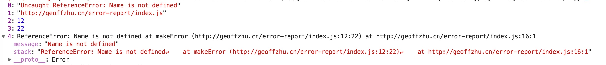
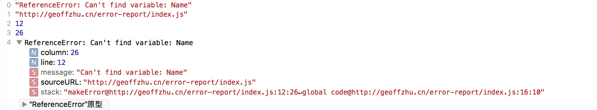
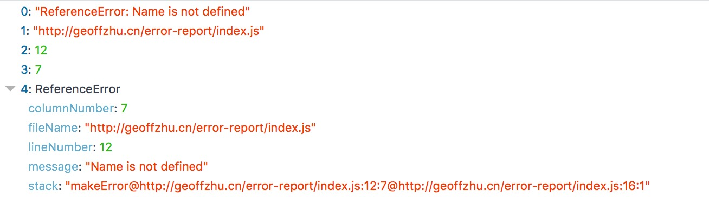
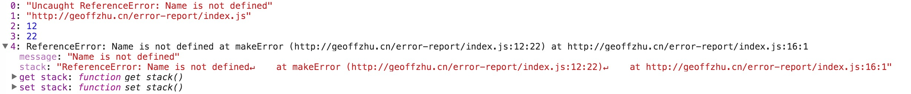
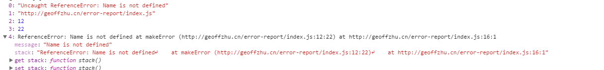
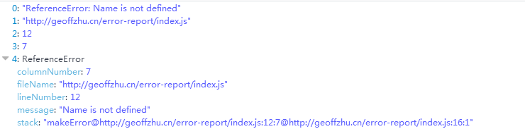
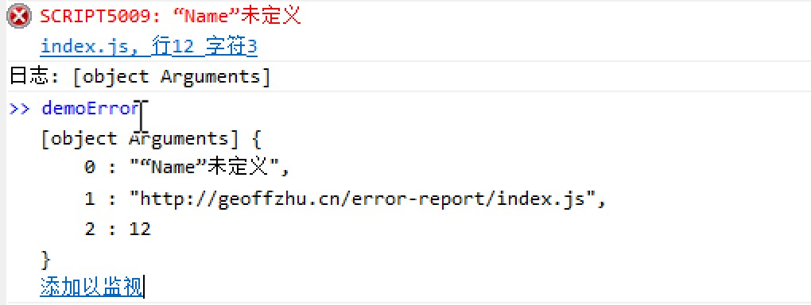
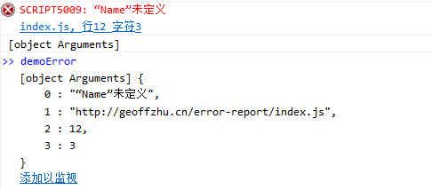

window onerror 多平台调研
做前端错误上报，必然离不开window onerror，但window onerror在不同设备上表现并不一致，浏览器为避免信息泄露，在一些情况下并不会给出详细的错误信息，本文的目的就是通过跑一些简单的小例子，验证onerror在不同浏览器下的具体表现。
准备
我会在Mac, Windows, Android和IOS平台下分别进行测试并记录。为了模拟真实线上环境，我利用GitHub Page模拟线上静态文件服务器，通过其他设备访问此地址即可。
| Mac | Windows | Android | IOS
——-|—–|———|———|—-
Chrome | ✅ | ✅ | ✅ | ✅
FireFox | ✅ | ✅ | ❌ | ❌
Safari | ✅ | ❌ | ❌ | ✅
IE9 | ❌ | ✅ | ❌ | ❌
IE10 | ❌ | ✅ | ❌ | ❌
UC | ❌ | ❌ | ✅ | ✅
微信webview | ❌ | ❌ | ✅ | ✅
测试用例
预期得到错误
—————–测试结果在最后，，，各个浏览器下执行的截图—————–
先看结论
大多数现代浏览器对window onerror都支持良好。需要注意的点如下：
- IE10以下只有行号，没有列号， IE10有行号列号，但无堆栈信息。IE10以下，可以通过在onerror事件中访问window.event对象，其中有errorCharacter，也就是列号了。但不知为何，列号总是比真实列号小一些。
- IOS下onerror表现非常统一，包含所有标准信息
- 安卓部分机型没有堆栈信息
总之，浏览器关于onerror这件事，是这样的一个演化过程，最早因为页面中的js并不会很复杂，所以定位错误只需要一个行号就很容易找到，后面加上了列号，最后又加上了堆栈信息。
测试数据
Mac (10.12.1)
Chrome 60.0.3112.90

Safari 10.0.1 (12602.2.14.0.7)

FireFox 47.0
QQ浏览器 （内核Chromium 48.0.2564.82）

Windows (win7)
Chrome 51.0.2704.106

FireFox 55.0
IE9
IE10

Android (5.1)
Chrome (59.0.3071.92)
1234567{"0": "Uncaught ReferenceError: Name is not defined","1": "http://geoffzhu.cn/error-report/index.js","2": 14,"3": 22,"4": {}}UC
1234567{"0": "Uncaught ReferenceError: Name is not defined","1": "http://geoffzhu.cn/error-report/index.js","2": 14,"3": 22,"4": {}}微信webview
1234567{"0": "Uncaught ReferenceError: Name is not defined","1": "http://geoffzhu.cn/error-report/index.js","2": 14,"3": 22,"4": {}}
IOS (10.3.2)
Chrome
1234567891011{"0": "ReferenceError: Can't find variable: Name","1": "http://geoffzhu.cn/error-report/index.js","2": 14,"3": 26,"4": {"line": 14,"column": 26,"sourceURL": "http://geoffzhu.cn/error-report/index.js"}}UC
1234567891011{"0": "ReferenceError: Can't find variable: Name","1": "http://geoffzhu.cn/error-report/index.js","2": 14,"3": 26,"4": {"line": 14,"column": 26,"sourceURL": "http://geoffzhu.cn/error-report/index.js"}}微信webview
1234567891011{"0": "ReferenceError: Can't find variable: Name","1": "http://geoffzhu.cn/error-report/index.js","2": 14,"3": 26,"4": {"line": 14,"column": 26,"sourceURL": "http://geoffzhu.cn/error-report/index.js"}}
关于代码压缩和source-map
我通过uglifyJs模拟webpack压缩的配置将上文中的index.js压缩，得到source-map，通过mozilla/source-map的SourceMapConsumer接口，可以通过将转换后的行号列号传入Consumer得到原始错误位置信息。相应的node代码如下
```javascript
var fs = require(‘fs’)
var sourceMap = require(‘source-map’)
// map文件
var rawSourceMapJsonData = fs.readFileSync(‘./dist/index.min.js.map’, ‘utf-8’)
rawSourceMapJsonData = JSON.parse(rawSourceMapJsonData)
var consumer = new sourceMap.SourceMapConsumer(rawSourceMapJsonData);
// 打印出真实错误位置
console.log(consumer.originalPositionFor({line: 1, column: 220}))
```**